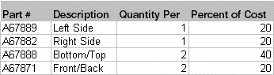

A co-product is an additional part produced by a work order, in addition to the main part. A work order or master specifies a part in its header that is considered the main part of the order. This part may or may not be assigned a part number. The co-product list specifies the additional parts that are made with the main part. All co-products must have part numbers; the part numbers are the primary keys of the record.
Do not confuse co-products with by-products. A by-product is similar to a co-product in that it is an additional part with value that is created by a work order. The difference is in the method used to cost the additional parts. Co-products are costed directly from work order details and calculated based on a percentage of the entire order cost. You can assign values to co-products much like materials are assigned values.
For example, a group of stamp parts, each having a different form, fit and function, but each produced from the same raw material at the same time are co-products. The scrap material produced by stamping is a by-product.
Continuing the example of stamp parts, consider a group of four parts that are produced from a single sheet of stainless steel.

The first part has been selected as the main part. This is a fairly arbitrary decision, except that it should not create difficult "quantity per" relationships.
The percent of cost calculation distributes the cost of the entire order to each individual part being produced. The above relationship causes the following unit costs, assuming the order costs a total of $1,000.
VISUAL computes the total cost of the order, apportions it to each of the co-products including the main part, and then computes a unit cost for each co-product.